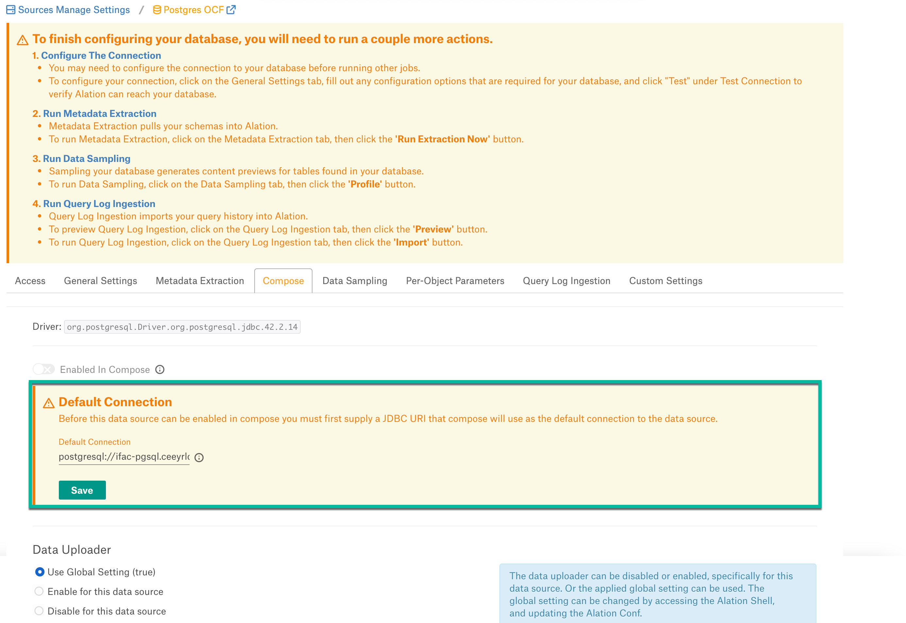

PostgreSQL Connector: Install and Configure¶
Alation Cloud Service Applies to Alation Cloud Service instances of Alation
Customer Managed Applies to customer-managed instances of Alation
Prerequisites¶
Network Connectivity¶
Open outbound TCP port 5432 to PostgreSQL server.
Create Service Account¶
Sample SQL to create an account¶
CREATE USER alation WITH PASSWORD '[password]';
Permissions for Metadata Extraction¶
GRANT USAGE ON SCHEMA PG_CATALOG TO alation; GRANT SELECT ON ALL TABLES IN SCHEMA PG_CATALOG TO alation;
Permissions for Table Profiling¶
GRANT USAGE ON SCHEMA [schema] TO alation;
GRANT SELECT ON ALL TABLES IN SCHEMA [schema] TO alation;
JDBC URI¶
When building the URI, include the following components:
Hostname or IP of the instance
Port number
Database name
URI format:
postgresql://<Host>:<Port>/<Database_Name>
Example:
postgresql://ifac-pgsql.ceyrldata.us-west-2.amazonaws.com:5432/postgres
Configuration in Alation¶
STEP 1: Install the Connector¶
Alation On-Premise¶
Important
Installation of OCF connectors requires Alation Connector Manager to be installed as a prerequisite.
To install an OCF connector:
If this has not been done on your instance, install the Alation Connector Manager: Install Alation Connector Manager.
Ensure that the OCF connector Zip file is available on your local machine.
Install the connector on the Connectors Dashboard page using the steps in Manage Connectors.
Alation Cloud Service¶
Note
On Alation Cloud Service instances, Alation Connector Manager is available by default.
Depending on your network configuration, you may need to use Alation Agent to connect to databases.
Connection via Alation Agent¶
Ensure that Alation Agent is enabled on your Alation instance. If necessary, create a Support ticket with Alation for an Alation representative to enable the Alation Agent feature on your instance and to receive the Alation Agent installer.
Connection Without Agent¶
To install an OCF connector:
Ensure that the OCF connector Zip file is available on your local machine.
Install the connector on the Connectors Dashboard page using the steps in Manage Connectors.
STEP 2: Create and Configure a New PostgreSQL Data Source¶
In Alation, add a new data source:
Log in to Alation as a Server Admin.
Expand the Apps menu on the right of the main toolbar and select Sources.
On the Sources page, click +Add on the top right of the page and in the list that opens, click Data Source. This will open the Add a Data Source wizard.
On the first screen of the wizard, specify a name for your data source, assign additional Data Source Admins, if necessary, and click the Continue Setup button on the bottom. The Add a Data Source screen will open.
On the Add a Data Source screen, the only field you should populate is Database Type. From the Database Type dropdown, select the connector name. After that you will be navigated to the Settings page of your new data source.
Note
Agent-based connectors will have the Agent name appended to the connector name.
The name of this connector is PostgreSQL OCF Connector.
Access¶
On the Access tab, set the data source visibility using these options:
Public Data Source—The data source will be visible to all users of the catalog.
Private Data Source—The data source will be visible to the users allowed access to the data source by Data Source Admins.
You can add new Data Source Admin users in the Data Source Admins section.
General Settings¶
Note
This section describes configuring settings for credentials and connection information stored in the Alation database. If your organization has configured Azure KeyVault or AWS Secrets Manager to hold such information, the user interface for the General Settings page will change to include the following icons to the right of most options:

{kind=link}
By default, the database icon is selected, as shown. In the vault case, instead of the actual credential information, you enter the ID of the secret. See Configure Secrets for OCF Connector Settings for details.
Perform the configuration on the General Settings tab:
Specify Application Settings:
Parameter
Description
BI Connection Info
Not applicable
Click Save.
Specify Connector Settings:
Parameter
Description
Data Source Connection
JDBC URI
Provide the JDBC URI constructed in JDBC URI.
Username
Provide the service account username.
Password
Provide the service account password.
Enable Kerberos Authentication
Enable or disable Kerberos authentication by selecting or clearing the Enable Kerberos Authentication checkbox.
If the Kerberos Authentication checkbox is enabled, upload the krb5.conf file using the upload link below.
Keytab
Not applicable
SSL Certificate
Select the Enable SSL checkbox to enable SSL connection for PostgreSQL EC2 and PostgreSQL Enterprise.
If the Enable SSL checkbox is selected, upload the SSL certificate using the upload link below.
Use pem file for SSL
Select the Use pem file for SSL checkbox to enable SSL connection for PostgreSQL RDS.
If the Use pem file for SSL checkbox is selected, upload the pem file using the upload link below.
Truststore Password
Provide the password for the SSL certificate.
The password will be deleted if the data source connection is deleted.
Logging Information
Log Level
Select the Log Level to generate logs. The available log levels are based on the Log4j framework.
Click Save.
Obfuscate Literals - Enable this toggle to hide the details of the queries in the catalog page that are ingested via QLI or executed in Compose. This toggle is disabled by default.
Under Test Connection, click Test to validate network connectivity.
{kind=link}
Add-On OCF Connector for dbt¶
The dbt connector can be used as an add-on with another OCF connector to extract and catalog descriptions and lineage from dbt models, sources, and columns in dbt Core or dbt Cloud. See Add-On OCF Connector for dbt on how to use this connector.
Metadata Extraction¶
You can configure metadata extraction (MDE) for an OCF data source on the Metadata Extraction tab of the Settings page. Refer to Configure Metadata Extraction for OCF Data Sources for information about the available configuration options.
The default queries that the connector uses to extract metadata can be found in Extraction Queries for PostgreSQL. You can customize these queries to adjust the extraction to your needs.
Compose¶
For details about configuring the Compose tab of the Settings, refer to Configure Compose for OCF Data Sources.
Note
OAuth connection is not supported for this data source.
{kind=link}
Data Sampling¶
Sampling and profiling is supported. For details, see Configure Sampling and Profiling for OCF Data Sources.
Query Log Ingestion¶
You can either create a view for Alation to retrieve the query log from or use a custom query to return the logs from the PostgreSQL data source.
Note
Alation does not support query log ingestion (QLI) with the PGAUDIT extension.
Alation supports the following PostgreSQL deployment: Amazon EC2, Amazon RDS, and EDB Postgres Server.
To configure QLI for PostgreSQL on Amazon EC2, EDB Postgres Server (PostgreSQL Enterprise), or a generic on-premise instance, see PostgreSQL On Amazon EC2 and Enterprise: Query Log Ingestion.
To configure QLI for PostgreSQL on Amazon RDS, PostgreSQL Connector RDS: Query Log Ingestion.
Native to OCF Migration¶
For information on migrating PostgreSQL sources to OCF connectors, see Migrate Native File System Sources to OCF.
Configure QLI Post Migration¶
If you already have a view to pull queries into Alation, after migration, follow the steps in Configure View-Based QLI or Configure Custom Query-Based QLI. If you do not have a view to use, configure QLI for PostgreSQL On Amazon EC2 and Enterprise or configure QLI on RDS.
Configure View-Based QLI¶
Go to the Query Log Ingestion tab of the Settings page of your OCF data source.
Under Connector Settings > Query Extraction, select Use Native QLI Table Name. In the Table Name field, provide the view name.
Click Save.

Configure Custom Query-Based QLI¶
See the Custom Query-Based QLI section of PostgreSQL Connector RDS: Query Log Ingestion
Troubleshooting¶
Refer to Troubleshooting.